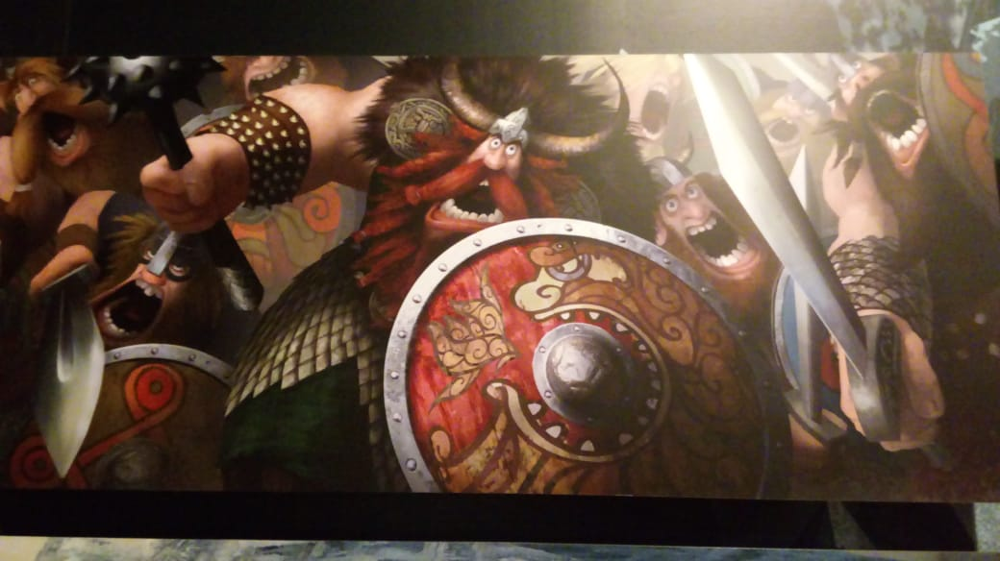
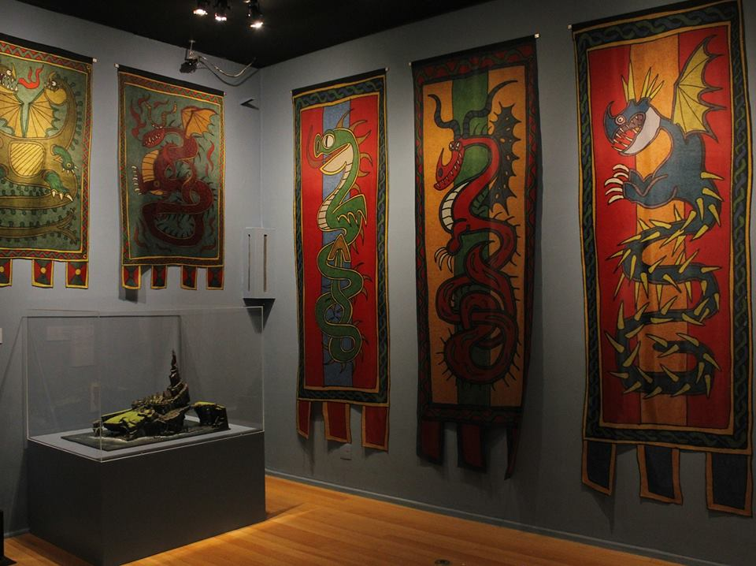

Aqui vemos umas das primeiras simulações iniciais do filme e suas primeiras formas. Ano: 2010

Quadro da grande guerra Vikings. Ano: 2010

Modelo da ilha de Berk e bandeiras dos dragões: Ziperarrepiante, Terror Terrível, Pesadelo Monstruoso e Nadder Mortal. Ano: 2014